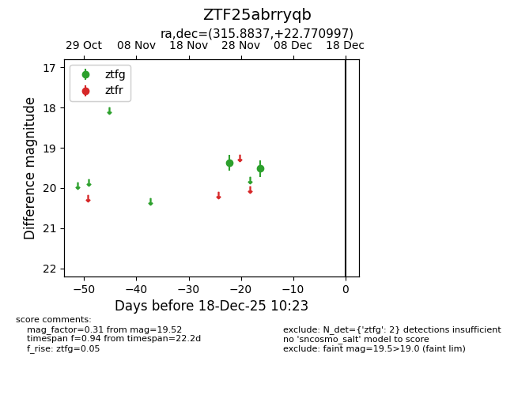
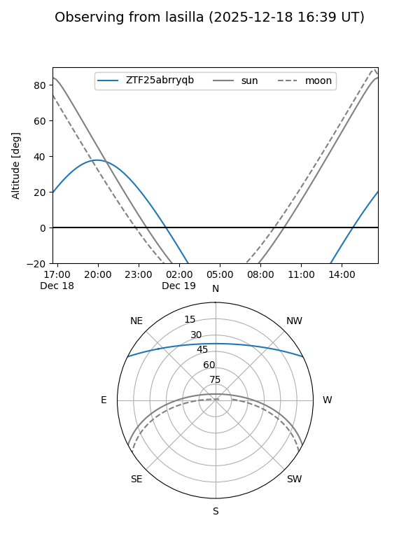
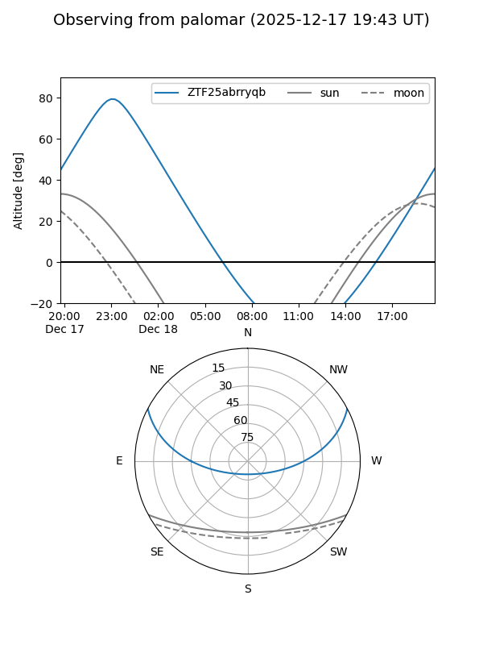

ZTF25abrryqb
Target ZTF25abrryqb at 2025-12-18 11:17
Aliases and brokers:
FINK: fink-portal.org/ZTF25abrryqb
Lasair: lasair-ztf.lsst.ac.uk/objects/ZTF25abrryqb
ALeRCE: alerce.online/object/ZTF25abrryqb
alt names
ZTF25abrryqb (ztf,fink_ztf)
Coordinates:
equatorial (ra, dec) = 315.8837,+22.77100
equatorial (HMS+DMS) = 21:03:32.08,+22:46:15.59
galactic (l, b) = (69.5061,-15.70862)
Photometry
last ztfg=19.52
2 ztfg detections
Lightcurve

Visibility


Additional plots